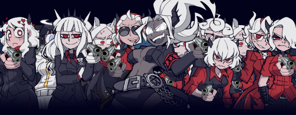

Helltaker é um jogo indie sobre um cara que tem o objetivo de ter um harém de garotas demônios, para atingir seu objetivo ele vai passar por vários desafios.
Quando lançou Helltaker?
Lançado no dia 11 de maio de 2020, o jogo de puzzles Helltaker, desenvolvido pelo animador e desenhista Lukasz Piskorz, também conhecido como Vanripper.
Vanripper fez as pessoas se lembrarem que um jogo não precisa de ótimos gráficos, sua simplicidade e carisma atingiu as pessoas dessa geração.
Sucesso de Helltaker
O humor do game junto de seu ritmo divertido e design único prendem o jogador em fases do game que possuem um limite movimentos para sua conclusão, tendo uma jogabilidade bem simples e direta.
Mittsies executou as faixas e com a Arte única de Vanrriper a alma máxima do game é certamente exposta. Com muita atenção nos detalhes nenhum personagem é desinteressante e cada uma das garotas possuem características que variam do encantador a homicida, oque confere veracidade ao fato de serem demônios.

O game foi abraçado por jogadores, e por ser de graça e bem acessível consolidou uma base forte de fã apesar de ser bem curto em conteúdo direto. Toneladas de artes de fãs, dublagens das comics do autor e até musicas novas inspiradas no game se tornaram comuns e o proprio Varriper ja disse que apoia abertamente que as pessoas dublem, escrevam e falem sobre o game.
Caso esteja interessado em ver a gameplay do jogo, deixo o vídeo abaixo comom recomendação:
Melhores waifus de Helltaker (change my mind)
A parte que todos estavam esperando, de fato existem várias waifus em Helltaker, mas qual delas é a favorita? Esse assunto possui muitas divergências, por isso irei mostrar um ranking do My Waify List, onde várias pessoas votaram para decidir esse rank. Confira abaixo as melhores waifus:
Lucifer
Cerberus
Modeus
Justice
Malina
Judgement
Beelzebub
Azazel
Pandemonica
Zdrada
Loremaster
Muito bem executado, simples e direto, Helltaker é tão redondo que a única falha é ser bem curto, entretanto por ter só um criador é perdoável pelo trabalho que é criar um game tão único!